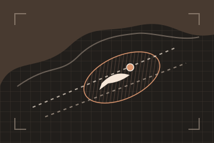

Vessel-strike risk and conservation policy for Rice's whales
Combining vessel trajectories and relative risk models to evaluate conservation benefits, policy coverage, and voyage delay.

Research question
How do alternative vessel-management policies change estimated strike risk, and what operational costs accompany stronger protection?
Approach
The work links AIS vessel trajectories, voyage-level relative risk models, and policy scenarios. Comparisons examine spatial coverage, speed restrictions, estimated risk reduction, and additional voyage time.
Current evidence
A course-based policy analysis and presentation are complete. Further work examines policy coverage and alternative management scenarios, with the extended policy search still in progress.